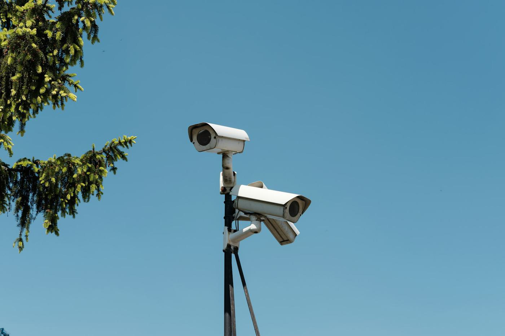

Platform
One platform from the sensor to the decision.
Place Performance brings together proven sensing hardware, local installation and support, and an analytics and AI platform. You get trustworthy numbers from day one and the intelligence to act on them.

How it works
Four layers, delivered as one service.
1. Sensors
FootfallCam 3D people counters at entrances and in spaces, plus specialist sensors for cyclists, vehicles and outdoor areas.
2. Edge processing
Counting happens on the device and data is masked at source. Only anonymous counts are sent onward.
3. Analytics platform
Live occupancy, floorplans, trends, benchmarking, alerts and reports across every site, space and zone.
4. AI insight
Forecasts, scenario planning, ranked recommendations and a Place Assistant you can ask in plain English.

Hardware included
We start with your question, not with a device.
Every place is different. Before anything is installed, our team assesses the environment, movement patterns, coverage, connectivity, power and privacy needs, then selects the technology that fits.
- Assess. What do you need to understand, and where? Entrances, floors, rooms, paths, roads or open spaces.
- Select. FootfallCam 3D counters for entrances and areas, plus specialist sensors for cyclists, vehicles and outdoor spaces.
- Install and commission. Designed, supplied, installed and calibrated by our Australian team, permanent or temporary.
- Support. Every device reports a heartbeat. Local experts keep the system accurate and expand it as your needs change.
Partners
Proven hardware, local expertise and an intelligent platform, delivered together.
FootfallCam
3D people counters designed and manufactured in the UK since 2002. Entrance and in-space counting with all processing at the edge and no personal data collected.
footfallcam.comPlace Performance
Our Australian team designs, installs and supports the complete system, from site survey to ongoing maintenance. Then the platform turns the data into real-time dashboards, live floorplans, alerts, reporting, forecasting and AI insights across every site, space and zone.
Try the live demoCapabilities
Everything you need to measure, understand and act.
Live occupancy
People present now against capacity, refreshed every few seconds.
Learn moreLive floorplans
Upload a plan, draw your rooms and watch them fill in real time.
Learn moreHeat maps & flow
Where people gather in a zone and how they move between spaces.
Alerts
Thresholds on occupancy, queues, sensor health and anomalies, with escalation.
Learn moreReporting
Scheduled reports and board-ready executive packs, delivered automatically.
Forecasting
Predicted visitation and occupancy with confidence ranges.
Learn moreScenario planning
Test opening hours, capacity, staffing and layout before you commit.
Learn morePlace Assistant
Ask questions in plain English and get answers from your live data.
Learn morePortfolio benchmarking
Rank sites, flag outliers and compare against peers.
Integrations
Point of sale, Wi-Fi, building management, GIS, parking and ticketing.
Device health
Every sensor on your plans with live status and uptime history.
Security & access
Roles, site-level permissions, single sign-on and an audit log.
Learn moreReports that run themselves
Weekly visitation summaries, monthly capacity reports and device health, scheduled to the right inboxes. Board-ready executive packs are generated each quarter.

Data you can trust
See every sensor on your floorplans with its live status. When a device goes quiet you are alerted, and the support team is already on it.

FAQ
Questions & answers
What hardware does Place Performance use?
Place Performance uses FootfallCam 3D people counters for entrance and in-space counting, plus specialist sensors for cyclists, vehicles and outdoor areas where needed. Our team selects the right technology for each environment after assessing it.
Who installs and supports the sensors?
Place Performance designs, supplies, installs, commissions and supports the complete measurement system in Australia, from the initial site survey through to ongoing maintenance and expansion.
Does it work outdoors?
Yes. Deployments can be indoor or outdoor, permanent or temporary, covering buildings, venues, parks, trails, streets and public spaces, including pedestrian, cyclist and vehicle counting.
What systems does it integrate with?
It connects to point-of-sale, Wi-Fi analytics, building management systems, GIS, parking and ticketing platforms. Integrations are configured for you, and you control settings such as sync frequency and which data feeds reports.
Can I see data for a single room as well as a whole portfolio?
Yes. Data is organised as portfolio, site, space and zone, so you can drill from all your locations to one building, one floor and a single room, with every metric rolling up automatically.
How accurate is the data?
Accuracy depends on the sensor and environment, which is why each location is assessed and each device is calibrated during commissioning. Device health monitoring flags drift or outages so data quality stays high.
See your places in a new light.
Book a 30-minute walkthrough and we'll scope a pilot for one of your sites: sensors, installation, software and insights in one agreement.